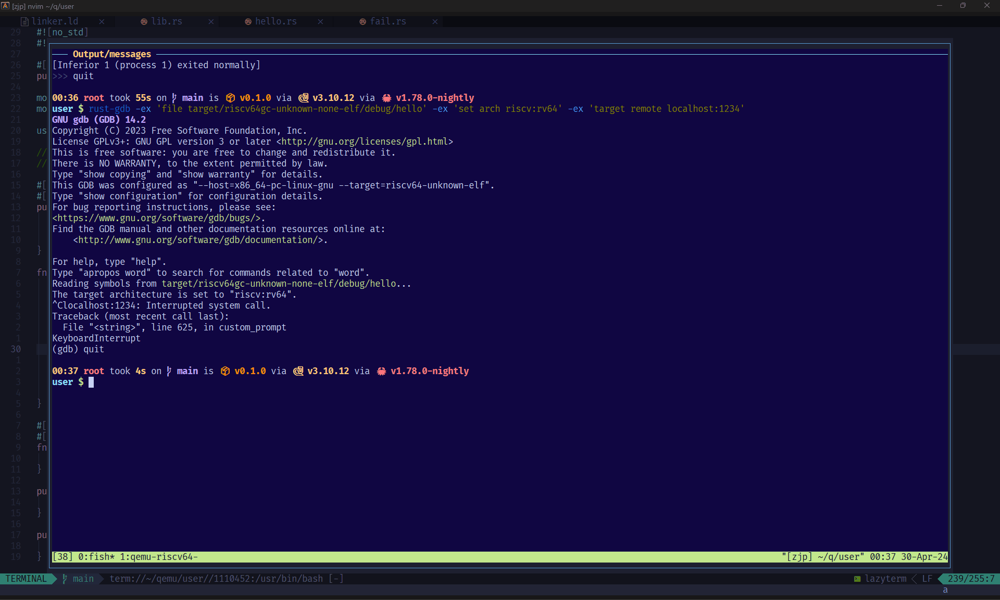

tmux 使用记录
时间：2024-04-29
背景
tmux 是一个流行且相当成熟的终端复用工具。在 Ubuntu 中，你可以使用 apt install tmux 安装它。
终端复用只有一个目的：在一个终端界面运行多个终端会话，从而尽可能地减少窗口的数量，但尽可能多地控制多个终端。
作为一个每天使用终端的人，有必要梳理和介绍我在这方面的终端使用经验。
实现终端复用 (terminal multiplex) 或者类似的效果有多种方式和工具：
- 终端模拟器：像 WezTerm 直接支持终端复用，它也支持多窗口；而 WindowsTerminal、mobaxterm、xshell 仅支持多窗口。
- 终端复用和多窗口其实异曲同工，并没有哪种方式更好
- 对于像 Alacritty 这样的软件，即不支持终端复用，也不支持窗口，那只有两条路可走：开多个模拟器界面，或者借助 TUI 软件
- 当然，即便支持多窗口的模拟器也可以走以上两条路
- 对于终端重度使用者来说，能忍受的切换成本，从高到低为：多模拟器 > 多窗口 > 终端复用
- 充当终端复用的 TUI 软件：在单个终端界面，通过运行 TUI 软件来控制和展示多个终端。
tmux 的历史比较长，超过了一万次提交，至今还在开发，足以说明它已经足够成熟。最大的缺点是不支持 Windows 平台。 但它把终端复用做到一个极致，软件设计上简约、统一、强大。
zellij 相比来说很年轻，它的亮点在于提供超越终端复用的功能。它支持常见的终端需求（文件树等）， 支持多人实时协作，并且拥有基于 wasm 的插件系统，与 tmux 相比是广度 vs 深度。
对于笔者个人来说，目前使用单个 Alacritty 界面，ssh 连接到云服务器，也就是单终端界面，然后打开 neovim 编程环境， 开 float window，在这个悬浮窗口中使用新的单终端或者 tmux 管理多个会话。

tmux 常用命令
man tmux 查看 tmux 文档。
命令与创建/查看会话
tmux创建并进入新的会话。其他创建命令：tmux new-sessiontmux new-session -s name给会话一个名字
tmux list-sessions查看所有会话。一个会话管理多个终端。会话可以被挂在后台 (detach)，或者进入/连接它 (attach)。-F参数用来显示给定的信息，比如tmux list-sessions -F 'id=#{session_id} name=#{session_name}'只显示 id 和会话名
tmux a、tmux attach、tmux attach-session等价，都用来连上一个会话- 不加任何参数，则连上最后被 detach 的会话
tmux a -t 会话名则连上固定的会话。会话名可以在 list-sessions 命令中知晓，它也出现在会话中的最左下方[name]。
tmux CLI 的子命令（比如上述 list-sessions 和 attach-session）与 Command 具有相同的名称和用法。你可以将它们视为 在 tmux 会话外部和内部调用的命令。但有些命令只单独作用于会话外或者会话中，大部分作用于两者。
tmux Command 的用法是通过快捷键 Ctrl-b 和 : 调出命令对话框（等价的命令是 command-prompt），这是一个类似于
vim 的命令模式的交互式对话框，它将最底部的信息栏变成输入子命令的地方。
快捷键与窗口管理
tmux 的快捷键是高度可配置的，不仅可以修改默认的快捷键，还可以绑定所有命令。快捷键只作用于会话中。
最重要的快捷键是 Ctrl-b，它是操作 tmux 的入口，其他快捷键都基于它，所以当谈论 tmux 快捷键时，不必再对此赘述。
这个设计与 zellij 形成鲜明对比：真正调用 tmux 功能的快捷键只占用一个，但 zellij 会有多个。对我来说，tmux 的快捷键设计更为统一而方便，因为减少了快捷键冲突的可能性，并极大地减少了认知成本。
以下是一些我常用的快捷键：
d(detach) 主动挂起当前会话，让它处于后台运行。挂起是一个很重要的功能，因为这允许我们在一个终端“最小化” tmux， 保持 tmux 会话内的所有终端状态，从而让你在单终端界面做别的事情：有时你不想处于 tmux，或者连接另一个 tmux 会话；而且这种挂起类似于nohup，ssh 断开并不会关闭被挂起的会话。tmux 也很好地处理被动挂起：当出现意外时，比如 ssh 因为网络而中断，那么 tmux 只是关闭 client 与会话的连接，但依然保持会话内所有程序的正常运行。- 窗口管理
l切换最近两个窗口中的另一个（底部状态栏带*符号的为当前窗口，-为切换l到的窗口)c(create) 创建新的窗口（终端）[进入 copy mode 来查看历史或者复制文字Enter复制文字- 一些 vim 按键来控制选区（需要在
/etc/tmux.conf中配置setw -g mode-keys vi) q退出 copy mode
!把当前 pane 拆分到新的窗口- 把拆分出的 pane 合并到某个窗口则需要
join-pane命令，比如将当前 pane 合并到 id 为 1 的窗口的左侧：join-pane -t :1 -h
- 把拆分出的 pane 合并到某个窗口则需要
%在当前窗口中，向左方拆分出新的 pane（终端）x关闭当前 pane（kill 终端以及里面运行的程序）